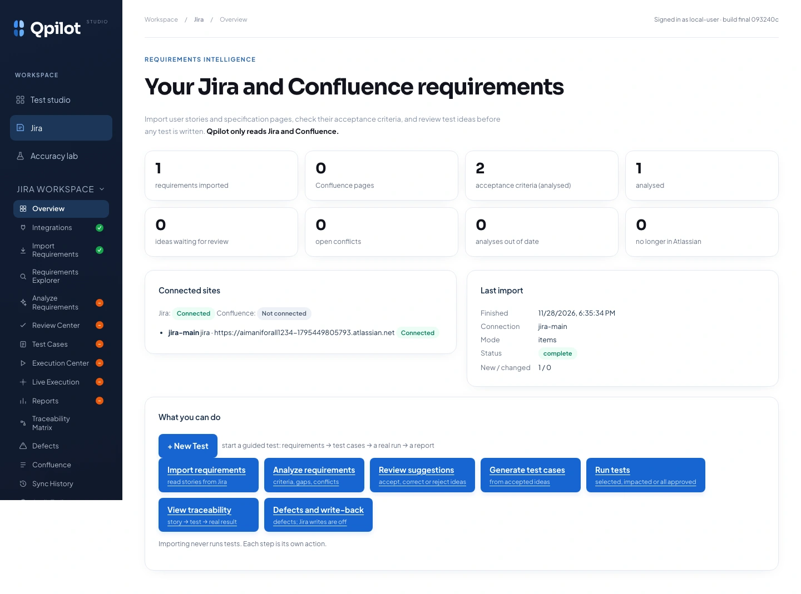
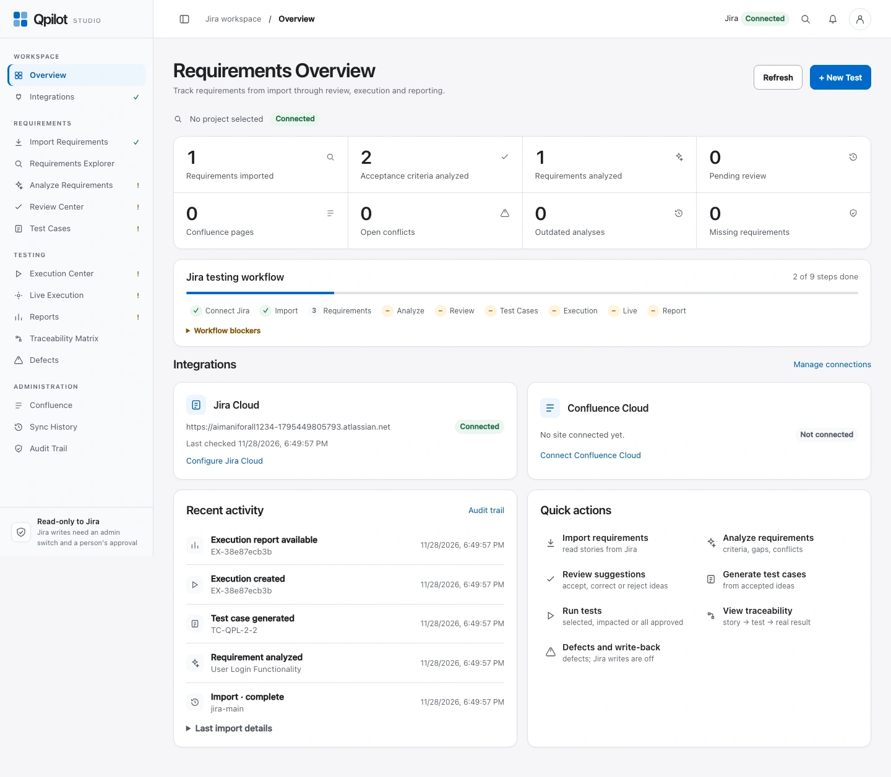

Jira and Confluence workspace redesign
The existing Qpilot workspace at /requirements now uses one light design system across its 15 sidebar destinations and Settings. The implementation stays in the existing HTML, CSS and JavaScript application on final.
Visual comparison
Select a page to compare its desktop layouts. Open an image for the full-height capture. Mobile captures are available in the table.




| Page | Desktop | 390 pixels | |
|---|---|---|---|
| Requirements Overview | Before | After | Mobile |
| Integrations | Before | After | Mobile |
| Import Requirements | Before | After | Mobile |
| Requirements Explorer | Before | After | Mobile |
| Analyze Requirements | Before | After | Mobile |
| Review Center | Before | After | Mobile |
| Test Cases | Before | After | Mobile |
| Execution Center | Before | After | Mobile |
| Live Execution | Before | After | Mobile |
| Reports | Before | After | Mobile |
| Traceability Matrix | Before | After | Mobile |
| Defects | Before | After | Mobile |
| Confluence | Before | After | Mobile |
| Sync History | Before | After | Mobile |
| Audit Trail | Before | After | Mobile |
| Settings | Before | After | Mobile |


Additional captures show the same provider-blocked execution in Live Execution and its report with zero tests executed.


Existing interface
The old workspace loaded the chat, Studio and global Qpilot styles before its own rules. Those sheets supplied overlapping navigation, scroll, form and typography rules. The narrow sidebar wrapped labels, quick actions used the same blue emphasis as New Test, and the live grid assigned fixed-height panels even on narrow screens. The attachment for this brief contained text. The before images came directly from the running baseline at commit 093240c.
Implementation
- The shared shell provides a 248-pixel sidebar, a 68-pixel compact mode, grouped navigation, breadcrumbs, project and Jira context, requirement search, workflow notifications and an account menu. Mobile navigation opens in the page flow. Existing links to Test Studio and Accuracy Lab are in the account menu.
- The workspace stylesheet centralizes typography, surface and status colors, spacing, focus outlines, controls and responsive layouts. Form fields, buttons, tables, drawers, notifications, metric cells, evidence panels and workflow indicators use those styles throughout.
- Overview reads eight metrics from the requirements API. Integration cards distinguish Jira and Confluence, while recent activity uses stored synchronization, analysis, generation and execution records. Each workflow indicator keeps its backend state and reason.
- Import keeps the existing project, issue, preview and synchronization flow. Explorer retains sorting, filters, pagination, bulk selection and the tabbed requirement drawer. Analysis offers rules-only and policy-permitted AI modes, a view of the configured provider and model, and optional instructions. Review Center shows decision totals. Test Cases exposes priority, automation status, counts and selection.
- Execution Center groups scope, application, provider and advanced options. Live Execution gives the browser the largest desktop panel, adds scenario filtering, retains event following and cancellation, and offers targeted retry or batch resume when available. Reports retain outcome, pass rate, execution coverage, duration, export and evidence.
- Traceability rows expand to show the execution and related defects. Defect details include expected and actual outcomes, classification and available evidence. Confluence uses a responsive space/page layout. Sync History and Audit Trail support local filtering of their loaded records.
Files changed
frontend/requirements.html,frontend/requirements.cssandfrontend/requirements.jscontain the shell, shared components and view behaviors.backend/requirements_api.pyadds overview activity, review counts, analysis configuration metadata and optional analysis instructions.backend/atlassian/analysis.pypasses reviewer focus through the existing privacy-checked AI path.tests/test_requirements_ui.pyandtests/test_atlassian_analysis.pycover navigation, report routing, populated responsive views, provider retry and reviewer instructions.
Verification
- Playwright drove Chromium 156.0.8078.4 against the real local Studio server, using isolated stores and the repository’s mock Atlassian integration and execution fixtures. Every displayed metric came through the application backend.
- All 16 screens fit at 1920, 1440, 1280, 1024, 768 and 390 pixels. The 96 layout checks found zero page-level horizontal overflow and the capture run logged zero browser console errors or uncaught exceptions. Wide data tables retain their own horizontal scrolling.
- Automated axe-core WCAG A/AA rules found zero violations on the 16 routes, New Test dialog and requirement drawer in the tested states. Browser tests exercised keyboard focus, mobile navigation, Escape, tab switching, control names and skip navigation. Scans used reduced motion. Manual screen-reader certification remains outside these results.
- 346 relevant frontend and backend regression tests passed. Coverage includes import, multiple connections, Confluence documents, review, generation, execution, multiple live browsers, blocked providers, recovery, reports, evidence, traceability, write-back restrictions and response ordering.
Functional findings and limits
- The original history jump used the workspace hash router and could send the user to Overview. The new button scrolls and focuses the history heading. Older report bookmarks now use the browser history API correctly.
- The import wizard could enable Next before its connections arrived. It now enables the action after a connection is available. Populated reports and execution details were also checked after correcting narrow-screen grid overflow during the redesign.
- A failed request for report-linked defects or traceability now displays an unavailable state. Batch analysis identifies requirements that failed and retains per-item errors.
- Requirement analysis uses the server-configured AI provider and model. Per-run provider/model selection is available in Execution Center. Live third-party credentials, paid model calls, physical devices and manual screen-reader testing were outside this local verification. Deployment awaits explicit approval.